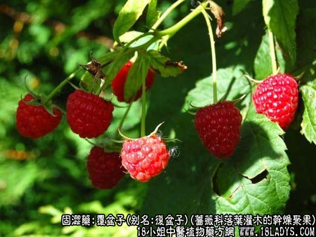
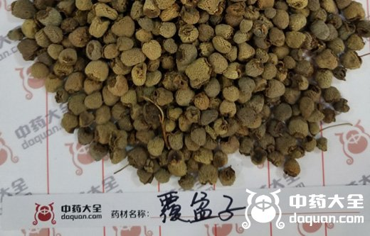
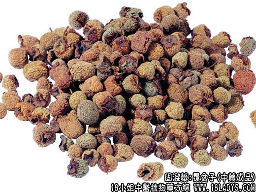
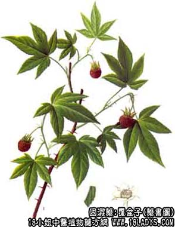

为常用中药。始载《名医别录》，列为上品。
别名：复盆子。
来源：为蔷薇科落叶灌木覆盆子或长叶覆盆子及同属多种悬钩子的近成熟干燥聚果。野生。
产地：主产于华东、中南、西南等地区。
性状鉴别：呈类圆锥形、类球形或扁圆形，由多数小果聚合而成。直径0.5～1厘米。高0.5～1.2厘米。表面黄绿色或灰绿色。顶端纯圆，底部有棕褐色总苞，向内凹陷，体轻而质坚硬。小果易剥落，放大镜下观察略呈三角形，向外一侧密被白色短毛茸，其他两侧有网眼状凹坑。气微清香，味微酸。以个大，坚实，黄绿色者为佳。
主要成分：含维生素A类物质、维生素C、挥发油等。
功效与作用：补益肝肾，作用为强壮、收敛、抗利尿。
炮制：生用。
性味：甘、酸、温。
归经：入肝、肾经。
功能：补肾固精，助阳明目。
主治：阳痿、遗精遗尿，小便频数，眼目昏花。
临床应用：治尿频、夜尿，常配桑螵蛸、益智仁、芡实等，效果较显著。但固精效果较差，虽用于治遗精、阳痿，但只作为辅助作用，主要靠配伍补骨脂、枸杞子、五味子、菟丝子等，方如五子汤。
使用注意：本品热而敛小便，凡有小便不利，阴不足而阳亢盛，虚火浮越者不宜用。
用量：9～15g。